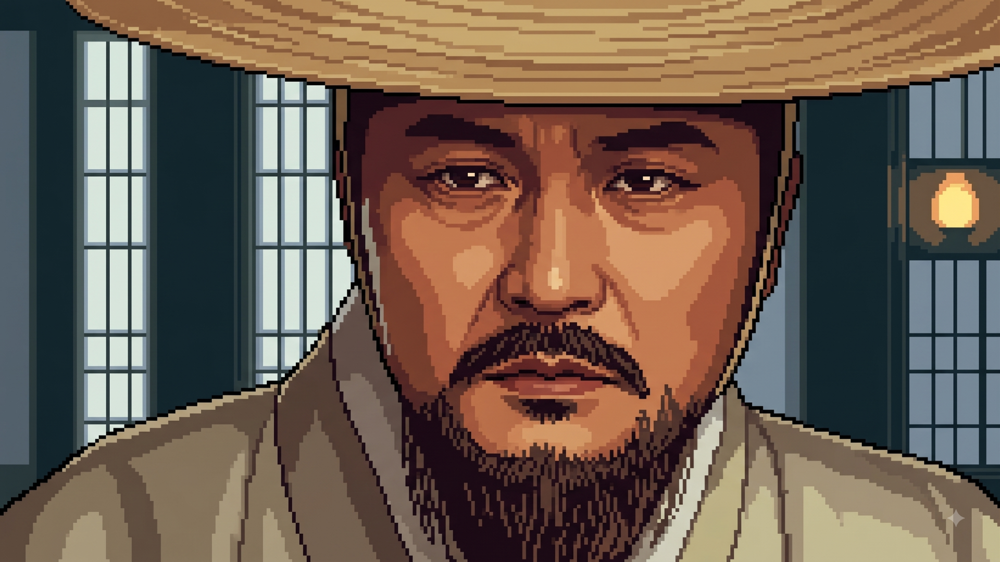

✨ 나도 참여하기
▾
그래, 이름이 어떻게 되시는가
↑
이름 없이 계속하기
먼저 양력 생일, 음력 생일 뭘로 하시겠소.
양력
음력
이제, 년, 월, 일을 입력해주시구려
연도
월
일
연도
월
일
윤달
↑
태어난 시간을 알고 있으면 그것도 참고하고 싶소만.
모르면 뭐, 괜찮소
모름 (선택 안 함)
子 자시 23:00–01:00 (水)
丑 축시 01:00–03:00 (土)
寅 인시 03:00–05:00 (木)
卯 묘시 05:00–07:00 (木)
辰 진시 07:00–09:00 (土)
巳 사시 09:00–11:00 (火)
午 오시 11:00–13:00 (火)
未 미시 13:00–15:00 (土)
申 신시 15:00–17:00 (金)
酉 유시 17:00–19:00 (金)
戌 술시 19:00–21:00 (土)
亥 해시 21:00–23:00 (水)
↑
내가 대학을 찾기 위해 그대가 동의해 주어야 할 것이 있소만.
입력한 이름·생년월일을 대학 궁합 계산과 친구 그룹 공유에 이용하는 데 동의해야 하오.
만 14세 이상이며, 대학 궁합을 직접 알아보고 있는 것 맞소?
(필수)
대학교 입학은 언제로 생각하고 있는가. 마지막 질문이네.
년도를 선택하시오
2025년 — 을사년 乙巳
2026년 — 병오년 丙午
2027년 — 정미년 丁未
2028년 — 무신년 戊申
2029년 — 기유년 己酉
2030년 — 경술년 庚戌
내 답을 주겠네...
여기를 클릭하세요
사주 오행을 분석하고 있어요…